8．黎曼与多值函数
在1850年左右，在函数论方面取得成就的一段时期告终了。严密的方法（像魏尔斯特拉斯所提供的），结果的准确描写和无疑问的存在性证明，在任何一种数学训练中都标志着发展中的一个重要的但也是最后的阶段。进一步的发展必须有一段先行时期，充满着自由的、繁多的、不连贯的、常常是偶然发现的，而且也许是无秩序的创造。阿贝尔定理就是这样的一步。在代数函数、它们的积分和反函数的理论中，一个新的发明时期是属于黎曼的。他实际上提供了一个宽广得多的理论，即多值函数的处理。在这方面只有柯西与皮瑟曾作过研究，并且由此为几个不同的进展铺平了道路。
黎曼（1826—1866）是高斯和威廉·韦伯（Wilhelm Weber）的学生。1846年到格丁根学神学，但不久就转学数学。他的1851年的博士论文是在高斯指导下写的，题目是《单复变函数的一般理论的基础》（Grundlagen für eine allgemeine Theorie der Functionen einer veränderlichen complexen Grösse）(39)，是复函数论的一篇基本论文。三年以后他成为格丁根的一个无薪大学教员（Privatdozent），即被允许作一些讲演并收学生的酬金。为了获得无薪大学教员的资格，他写了大学讲师就职论文《关于利用三角级数表示一个函数的可能性》（Habilitationsschrift，Über die Darstellbarkeit einer Function durch eine trigonometrische Reihe），并且作了一个大学讲师就职讲演《关于几何基础的假设》（Habilitationsvortrag，Über die Hypothesen welche der Geometrie zu Grunde liegen）。在这以后又写了一批有名的论文。1859年黎曼接替狄利克雷（Peter Gustav Lejeune Dirichlet）作为格丁根的数学教授，他死于肺病。
黎曼常被描述为一位纯粹数学家，但这远非正确。虽然他对数学本身作了很多贡献，但他深深地关心于物理以及数学与物理世界的关系。他写了关于热、光、气体理论、磁、流体力学以及声学方面的论文。他企图将引力与光统一起来，并研究了人耳的结构。他的关于几何基础的工作试图找出我们对于物理空间的知识哪一些是绝对可靠的（第37章）。他自己说，他的关于物理定律的工作是他的主要兴趣。作为一个数学家，他自由地运用几何直观及物理论证。基于克莱因（Felix Klein）给出的证据，黎曼的复函数思想很可能是来自他研究平面电流的流动。位势方程是那个科目的中心，而在黎曼对复函数的探讨中也是这样。
在黎曼对多值函数的探讨中，关键思想是黎曼面的概念。函数w2＝z是多值的，事实上对于z的每一个值，有w的两个值。为了研究这个函数并保持两个值集
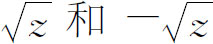
分开，即把分支分开来，黎曼给每一分支引进一个z值平面。他还附带地在每一平面上引进一个点对应于z＝∞。这两个平面被看作是一个位于另一个的上方，并且首先是在两个分支给出相同w值的那些z值上连接起来。这样，w2＝z的这两个平面（或称为叶）就在z＝0和z＝∞处连接起来了。现在
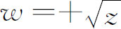
仅由上叶上的z值表示，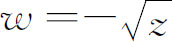
则由下叶的z值表示。只考虑上叶的z值时，就理解为必须计算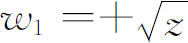
。可是，当z沿着该叶上围绕原点的圆变动（图27.6），因而z＝ρ（cosθ＋isinθ）中的θ由0变到2π时，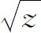
只覆盖住映入w值的复平面上的一个半圆。现在让z变动到第二叶，譬如说，让它穿过正x轴。当z变动到这个第二叶时，我们取由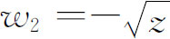
给出的w值。当z作出另一个绕原点的环路，因而在第二叶上θ由2π变到4π时，对这个路径，我们得到w2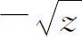
的取值范围，这些w值的极角由π变到2π。当z又一次穿过正x轴时，我们认为它是运行在第一叶上。这样，经过z值绕原点的两个环行（在每一叶上各一次），我们就得到函数w2＝z的w值的全部范围。另外，本质的一点是，如果z在黎曼面（它是两叶的集合）上变动，w就变为z的一个单值函数。为了把一叶上的路径区别于另一叶上的路径，我们同意在w2＝z的情形下，把正x轴看作是一个分支切割。它连接点z＝0和z＝∞。也就是说，当z穿过这个切割时，必须取属于z进入的那一叶的w的分支。分支切割并不一定要是正x轴，但是，在现在的情形下，它必须连接0和∞。点0和∞称为支点，因为当z绕着0和∞划出一个闭路径时，w2＝z的分支互相交换。
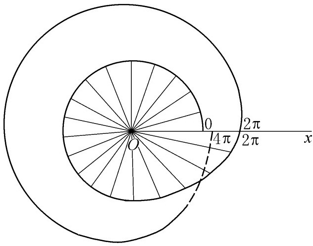
图27.6
函数w2＝z和与它相联系的黎曼面特别简单。考虑函数w2＝z3-z。这函数也有两个分支，它们在z＝0，z＝1，z＝-1和z＝∞处变为相等。而且（我们不给出全部论证）所有这四点都是支点，因为如果z绕着它们中的任一点作一环行时，w的值就从一个分支变到另一个分支。分支切割可以取为由0到1，0到-1，1到∞和-1到∞的线段。当z穿过这些分支切割的任何一个时，w的值从它在一个分支所取的值变到它在第二个分支所取的值。
对于更复杂的多值函数，黎曼面更为复杂。一个n值函数需要一个n叶黎曼面。可能有很多支点，必须引进连接每两个支点的分支切割。另外，一个支点的各叶并不一定和另一支点的各叶相同。如果k个叶重合于一个支点，就称这个支点是k-1阶的。然而一个黎曼面的两叶可以在一点接触，但是当z绕这一点走完一周时，函数的各分支可能不变。这时，这个点就不是支点。
不可能在三维空间里准确地表示出黎曼面。例如，w2＝z的两叶，如果在三维空间里来表示，它们就必须沿正x轴相交。因而一叶必须沿着正x轴被割开，但是另一方面数学要求从第一叶光滑地进入第二叶，然后绕z＝0作一环行以后，又回到第一叶。
黎曼面不仅是描绘多值函数的一个方法，而且有效地使这样的函数在曲面上单值，与z平面上的情形相对立。这样，关于单值函数的定理可以推广到多值函数。举例来说，单值函数沿着一个区域（在其中函数为解析）的边界曲线的积分为0的柯西定理，被黎曼推广到了多值函数。解析区域在曲面上必须是单连通的（可以收缩到一点的）。
黎曼把它的曲面想象为平面的一个n叶复制品，每一个复制品被补充了一个无穷远点。可是，把这样一个曲面设想为n个互相连接的平面，就难以理解所有的有关论证。因此，从黎曼那个时候以来，数学家们曾经提出了一些较易想象的等价模型。我们知道，利用球极平面射影可以将一个平面变换成一个球面（第7章第5节）。因此我们可以利用n个半径差不多相同的同心球面来构造黎曼面的一个模型。球面序列是和平面序列相同的。平面的支点与分支切割照样变换到球面上，因而这些球面沿着分支切割互相缠绕。现在我们把这组球面想象为z的域，而z的多值函数w在这组球叶上是单值的。
直到现在，我们说明黎曼的思想时，都是从一个函数f（w，z）＝0出发（它是w和z的一个不可约多项式），指出什么是它的黎曼面。这并不是黎曼的途径。他是从一个黎曼面出发的，并提议证明有一个属于它的方程f（w，z）＝0，并进一步证明有其他单值及多值函数定义在这个黎曼面上。
单值解析函数f（z）＝u＋iv的黎曼定义是：这个函数在一点及其邻域内解析，如果它连续可微并满足我们现在称之为柯西-黎曼方程的话，
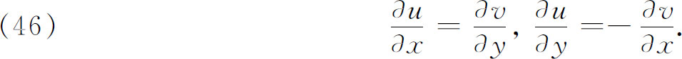
我们知道这些方程曾出现在达朗贝尔、欧拉和柯西的著作中。顺便说说，黎曼是第一个要求导数dw/dz的存在性是指Δw/Δz的极限必须对于z＋Δz趋近于z的每一途径都相同的人。［这个条件区分出了复函数，因为在实函数u（x，y）的情形下，u的一阶导数对于所有趋于某点（x0，y0）的方向都存在并不能保证解析。］于是他寻求整个地决定x＋iy的一个函数的最少条件，而不管这个函数存在于哪一个区域。从柯西-黎曼方程显然看出，u和v要满足二维位势方程
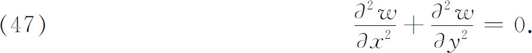
黎曼曾有过这样一个想法，认为利用u满足位势方程这个事实，这个复函数可以在它的存在区域中立刻整个地被确定。
黎曼明确地假定，黎曼面上的一个位置函数w将由实函数u（x，y）确定（除一个附加的常数以外），如果u满足下列条件：
（1）它在曲面上所有使导数不为无穷的点处满足位势方程。
（2）如果u是多值的，那么它在曲面任一点上的值彼此相差一些实常数整数倍的线性组合（这些实常数是w的周期模的实部，我们将在以后讨论）。
（3）u可以在曲面的指定点上有给定形式的无穷（极点）。这些无穷应属于使w为无穷的那些项的实部。作为一个次要的条件，他的确进一步假定了沿着曲面一部分的边界闭曲线，u可以有有穷值，或者说u和v的边界值可能存在一个关系。至于这样一个关系的一般性的程度，黎曼说得不明确。
这些条件应该确定u。一旦u被确定了，则由柯西-黎曼方程就有
这样v因而w也被确定了。重要的是，对于黎曼来说，u的域是黎曼面的任何一个部分，包括可能是整个曲面。在他的博士论文中，他考虑了有边界的曲面，只是在以后才用了闭曲面，即没有边界的曲面，例如环面。
为了决定u，黎曼的本质性工具是他称为的狄利克雷原理，因为这是他从狄利克雷那里学到的；不过他把它推广到黎曼面上的区域，并且在域中规定了u的奇异性和跳跃（以上条件2及3）。狄利克雷原理说的是，最小化狄利克雷积分
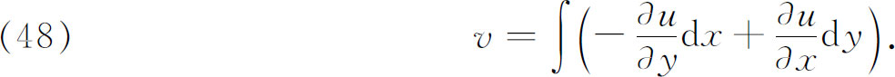
的函数u满足位势方程。事实上后者就是狄利克雷积分的第一变分为零的必要条件（也看第28章第4节）。因为在狄利克雷积分中，被积函数为正，故有一个大于或至少等于0的下界，黎曼断定必有一函数u最小化积分并因而满足位势方程。于是对黎曼来说，函数u的存在，因而由（48），函数f（z）的存在［它属于黎曼面，甚至可以有规定的奇异性和复跳跃（周期性模）］可以保证。
以一个已给的黎曼面作为值域的函数的存在性一旦确立以后，就可以证明对于已给的曲面可以联系一个基本方程，即有一个f（w，z）＝0，它以已给的曲面为它的曲面。至于这个曲面如何相应于w与z之间的关系，黎曼并没有叙述。实际上，这个f（w，z）＝0不是唯一的。事实上，从曲面上w与z的每一个有理函数w1，通过f（w，z）＝0可以得到另一个方程f1 （w1，z）＝0，如果它是不可约的，那么就有同一个黎曼面。这是黎曼方法的一个特点。
为了进一步研究能在一个黎曼面上存在的函数类，必须熟悉黎曼关于黎曼面的连通性的概念。一个黎曼面可能有边界曲线，或可能像球或环面那样是闭的。如果是一个代数函数的黎曼面，也就是说，如果f（w，z）＝0定义w为z的函数，而f是w和z的一个多项式，那么曲面就是闭的。如果f是不可约的，即不能表示为这种多项式的乘积，那么曲面是由一片构成的，或者说是连通的。
一个平面或一个球面是这样一个曲面，任意一条闭曲线把它分成两部分，要连续地从一个部分中的一点通到另一部分中的一点，不可能不穿过这闭曲线。这样的一个曲面称为单连通的。可是，如果能够在一个曲面上画出一条闭曲线，它不使曲面分离，那么这个曲面就不是单连通的。而如果能够在一个曲面上画出某种闭曲线而不至于使这曲面不连通，这曲面就是多连通的。举例来说，我们可以在环面上画两条不同的闭曲线（图27.7），即便两者都出现，也不使这个曲面不连通。
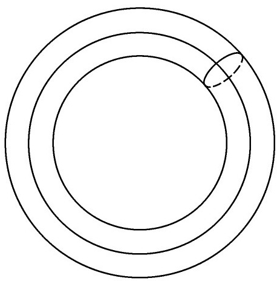
图27.7
黎曼想指定一个数来表示他的曲面的连通性。他把极点与支点看作是曲面的部分，而且由于他心目中想的是代数函数，所以他的曲面是闭的。去掉一叶的一小部分，这个曲面就有了一条边界曲线C。然后他把这个曲面想象为被一个不自交的曲线割开，这条曲线从边界C的一点跑到边界C的另一点。这样一条曲线称为横剖线（Querschnitt）。这条横剖线和C被看作是一个新的边界，并且可以引进从（新）边界的一点出发到另一点而不穿过（新）边界的第二条横剖线。
引进足够多的这样的横剖线，将一个可能是多连通的黎曼面剖为一个单连通曲面。例如，如果一个曲面是单连通的，就不需要横剖线，并且这个曲面有连通数（Grundzahl）1。一个曲面称为双连通的，如果用一条适当的横剖线就可以把它变成单一的单连通曲面。这时，连通数是2。一个平面环和有两个洞的球面就是双连通的例子。一个曲面称为三连通的，如果用两条适当的横剖线可以把它变成单一的单连通曲面。这时连通数就是3。有一个洞的环面就是一个例子。一般地说，一个曲面称为N连通的，或有连通数N，如果用N-1条适当的横剖线可以把它变成一个单连通曲面。有N个洞的球面有连通数N。
现在可以将一个黎曼面（有一个边界）的连通数和支点的个数联系起来了。每一个支点ri是按照在这一点互换的函数的分支个数来计算的。如果这个数是wi，i＝1，2，…，r，那么ri的重数就是wi-1。假定曲面有q叶，则连通数N是
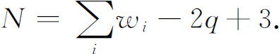
可以证明，有单一边界的闭曲面的连通数N是2p＋1。所以
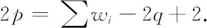
整数p称为黎曼面和与之相联系的方程f（w，z）＝0的亏格，这个联系是黎曼建立的。
一个相当重要的特殊情形是
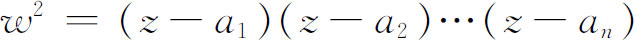
的曲面，它有一个两叶的黎曼面，有n个有穷支点，当n是奇数时，z＝∞是一个支点，于是
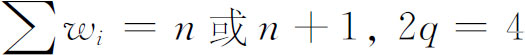
。曲面的亏格p是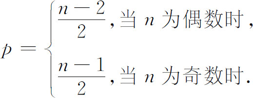
给定了由f（w，z）＝0确定的一个黎曼面，我们知道w是这个曲面上的点的一个单值函数。于是w和z的每一个有理函数也是曲面上的位置的一个单值函数（因为在这个有理函数中可以将w换为它的用z表示的值）。这个有理函数的支点，虽不是它的极点，但也和f的那些支点相同。反过来，可以证明具有有穷阶极点的曲面上的位置的每一个单值函数，都是w和z的一个有理函数。
即使是定义在通常平面上的简单单值函数，它的积分也可以是多值的。例如
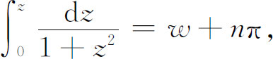
其中w是沿着譬如说由0到z的直线路径的积分的值，而n则依赖于由0到z的路径绕±i的情形。同样，在一个黎曼面上的单值函数，例如在这曲面上的w和z的一个有理函数，这种函数的积分就可能是多值的。这确实会发生。如果引进横剖线使曲面成为单连通的，而且如果积分路径是从z1到z2，每当路径穿过横剖线一次，积分的基本值U上就加一个常数值I，这个基本值U是在曲面的一个单连通部分的一个路径上积分的值。如果路径在同一个方向穿过横剖线m次，则值mI就被加到U上。常数I称为一个周期模，每一横剖线引进它自己的周期模，而如果曲面的连通数是N＋1，就有N个线性无关的周期模。设它们是I1，I2，…，In。那么原来的单值函数沿着原来路径的积分的值就是
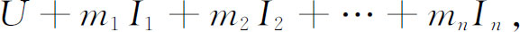
其中m1，m2，…，mn为整数。这些Ii在一般情形下是复数。